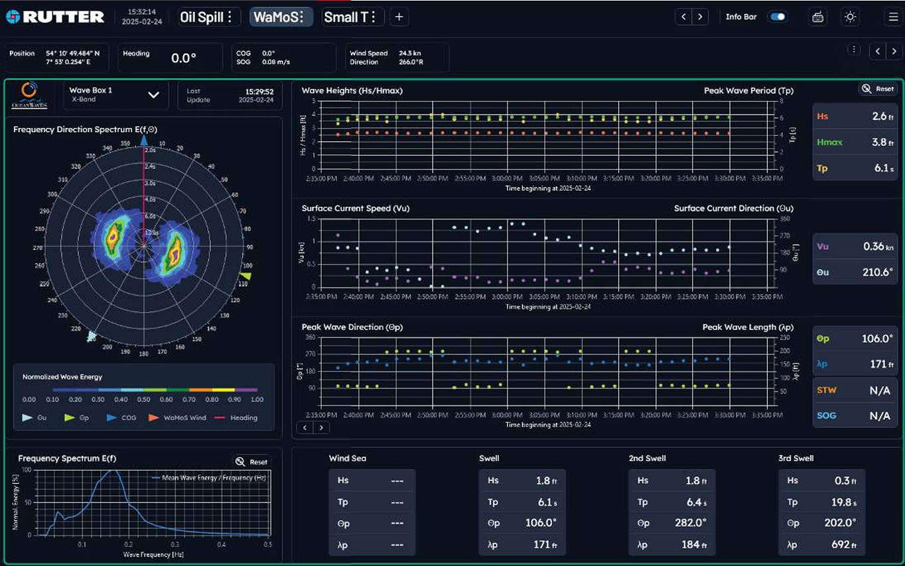
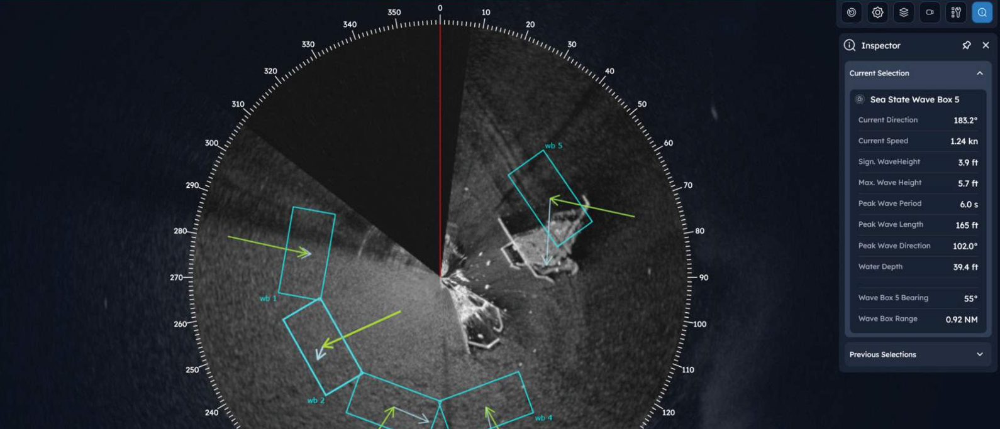

Real-Time Environmental Intelligence
Delivers critical wave and current data with wave-field imagery, numerical measurements, and graphical reports to support go/no-go decisions.
X-band radar system delivering real-time ocean measurements while a vessel is underway or holding station for safer, more efficient offshore operations.
Delivers critical wave and current data with wave-field imagery, numerical measurements, and graphical reports to support go/no-go decisions.
Differentiates peak waves, wind sea, and up to three distinct swell systems so operators can better assess risk and safe operating windows.
DNV and IEC 60945 certified with customizable views and optional high-resolution surface current grids through sigma S6 Current Monitor.

Real-time, accurate, and cost effective measurement from marine radar.
WaMoS® II is a proven radar-based wave and surface current measurement system. Connecting to most commercial X-band radars, it measures and reports key sea-state parameters including significant wave height, peak wave height, peak period, peak wavelength, surface current speed, and current direction.
The system helps operators assess environmental risk across multiple locations in radar view, identify safe operational windows, and plan offshore activity with greater confidence.
WaMoS® II can run with a dedicated Rutter X-band radar or interface passively with other compatible marine radars. It is fully motion compensated and supports vessels underway as well as fixed platforms.

Use this section for sea-state analytics demonstrations, route planning workflows, and offshore operational timing examples.
All sigma S6 products can be combined on one IEC 60945 Radar Data Processor, simplifying deployment and enabling modular capability growth.

sigma S6 WaMoS® II package: